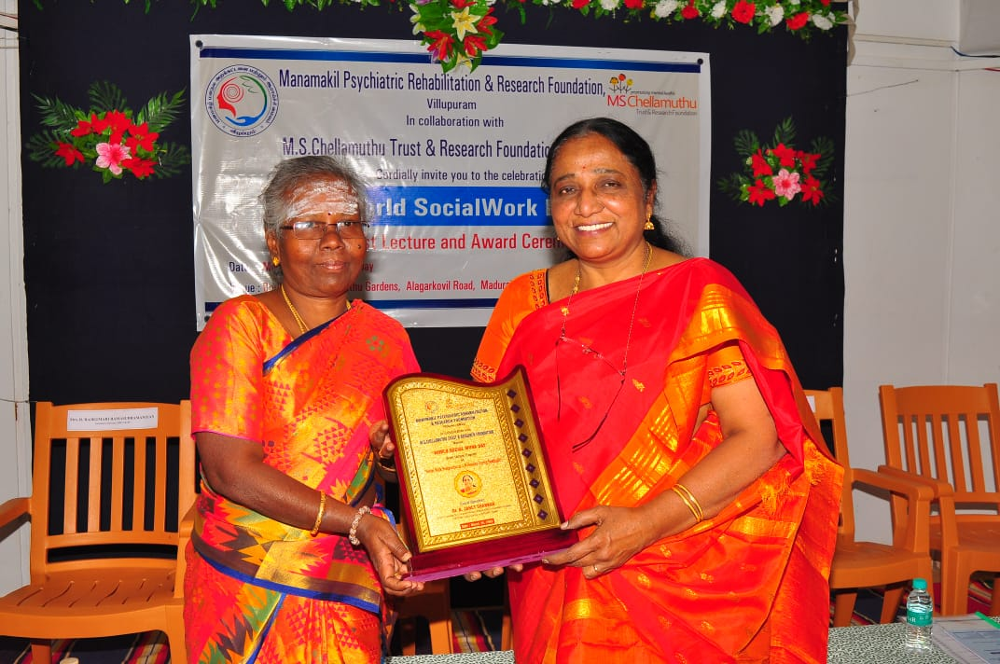
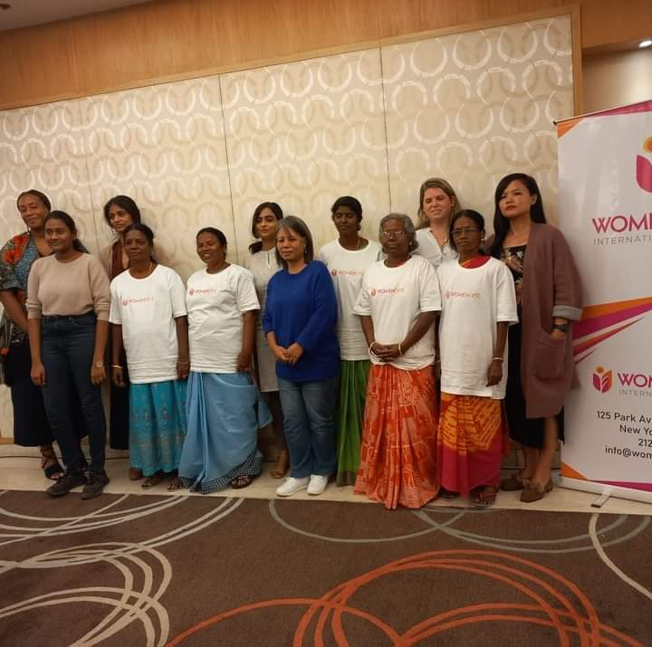

Dignity
Every programme is designed to respect people, their work, and their right to a better future.
WE-TRUST works for women’s dignity, livelihood, and opportunity through practical support, field-level engagement, and long-term partnerships.

Our work focuses on women construction workers, self-help groups, families in need, and community members who benefit from livelihood support, rights awareness, health support, and social care.
Every programme is designed to respect people, their work, and their right to a better future.
We support skills, training, and income pathways that help women sustain themselves and their families.
We build on local relationships, trust, and partnerships with donors, leaders, and volunteers.
WE-TRUST has supported women construction workers in Pudukkottai district through awareness on welfare boards, labour rights, women’s rights, gender sensitization, health camps, and skill-based livelihood support.
During the pandemic, the trust also reached families with raw ration, essentials, and telecounseling support.

WE-TRUST remains grateful to Women First teams, donors, community leaders, and volunteers whose support helps the trust continue its mission with strength and consistency.

WE-TRUST’s focus on gender equality and reduced inequalities reflects its direct connection with SDG 5 and SDG 10, while the rest of its work strengthens broader development goals.
Public listing information describes WE-TRUST as a charitable trust in Ambikapuram, Trichy, serving local and wider communities with women-centered support and trust-based service.
According to the listing, volunteers can connect with the trust, cash donations are accepted, and membership does not require payment.